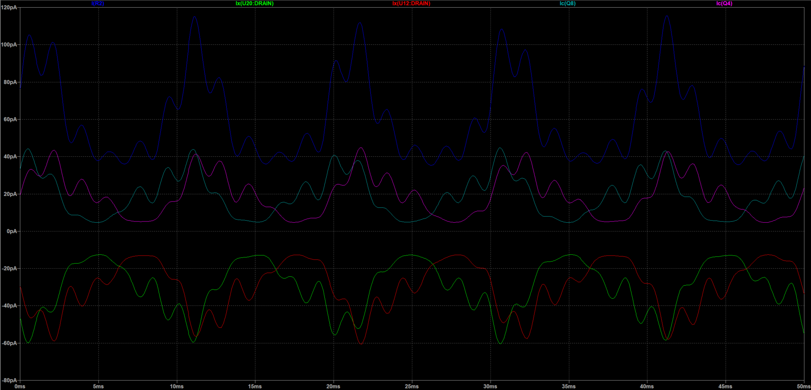
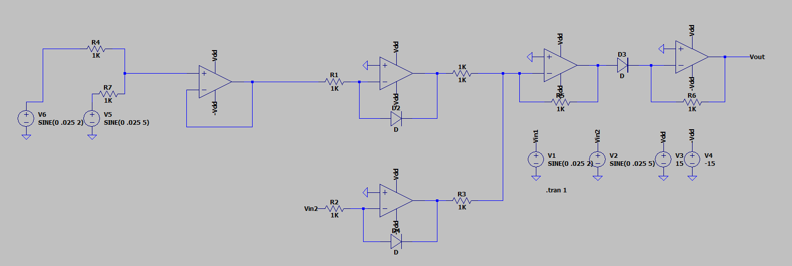
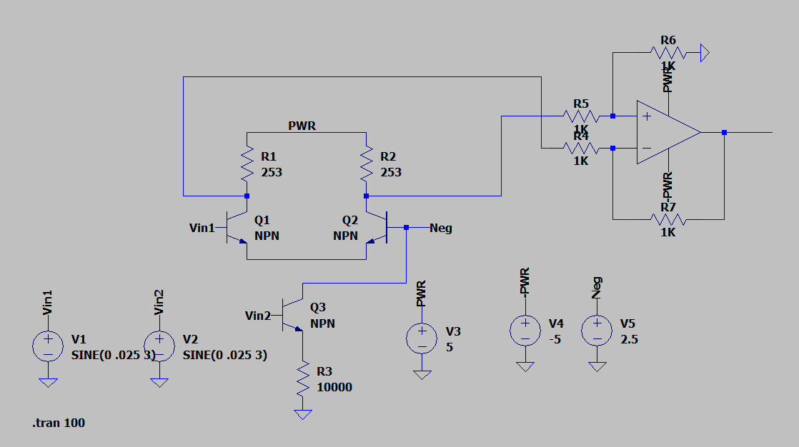

CIRCUIT PROCESS AND EXPLANATION
The final circuit we used was done in simulation, but we tried multiple circuits to try and achieve our goal of creating an analog fourier transform.
The circuit above is a translinear circuit, which multiples two oscillating currents, combined with a current to voltage converter and an integrator. We then convert the current into voltage, to allow us to use the integrator circuit, which integrates the product of the two waves over time. The integral will approach a plateau and the higher amount the integral approaches the more the oscillating waves align. Thus, if we control one of the waves with a known frequency we can see how much they correlate with the integral.
The integrator hasn't properly worked in simulation for us, so we went with converting the LTspice data to a .txt file and using MATLAB to handle the integration of the circuit. We did create the integrator on a breadboard and used an oscillascope to check the accuracy of it. The configuration of converting the output current to voltage and then using the integrator to take the continuous integral, work experimentally, thus even though we did portions of the circuit through software the theory still holds true.
The circuit we then used was a little more simplified and only dealt with the computations using currents. The translinear circuit multiplies the two waves of unknown frequencies or combined waveforms and the sine wave generator we are sweeping the frequencies with. The circuit is then copied for the cosine waves in the fourier transform, which was the sine wave with a phase shift of 90 deg. Thus, we can represent the real and imaginary parts of the fourier transform. After the multiplication, we put current mirrors to isolate the output currents.
The circuit uses the base-emitter voltages with the logarithmic properties of npn transistors to multiply the currents. Since we are pairing the transistors we are able to take advantage of those logarithmic charateristics and cancel them out.
Since the clockwise currents equal the counter-clockwise currents, we are able to solve for the current of I4 by bringing I3 to the other side of the equation, which will be a scalar for the input currents I1 and I2. I1 and I2 are the waveforms we are multipling and in our ciruit I1 is the combined waveform and I2 is the waveform we are sweeping the frequency of.
To check the accuracy of the multiplication, we tested different parts of the circuit. The image below shows the waveforms in the later stages of the circuit.
The figure contains 5 waveforms. I(R2) (blue) is the final waveform of the multiplied sine and cosine summed together. Ic(Q8) (grey) and Ic(Q4) (purple) represent the sine and cosine multiplication outputs. Ix(U12:DRAIN) (red) and Ix(U20:DRAIN) (green) are the outputs of the current mirrors. We couldn't figure out why the currents were reflected across the x-axis, but the final output wave appears to represent the summed waves correctly. The waves are in the pico Ampere range, which is consistent with the calculations we made in software. These waves were sampled for .05 seconds to be able to clearly see the waveforms. During our calculations, we lengthen the amount of time we sampled the waves.
To better visualize the output of the circuits we used bandpass filters to break down a range of 1 Hz to 20,000 Hz into bands of 5,000 Hz. If the frequency was in the band the LED would turn on and we would see which frequencies are present in the signal. This circuit could be broken down further to smaller bands to measure precise frequencies.
OTHER CIRCUITS WE CONSIDERED
We tested a few more circuits to compute the waveform multiplication, but we weren't able to get any of them to work properly. We believe there were scaling issues which we didn't know how to account for. All of these circuits were trying to multiply voltages instead of currents. Since we didn't use these in the final product of our project we didn't include the math behind each cirucit.
The first circuit we tried was the log anti-log multiplier with op amps.
The next circuit we tried was the Gilbert multiplier ciruit.
